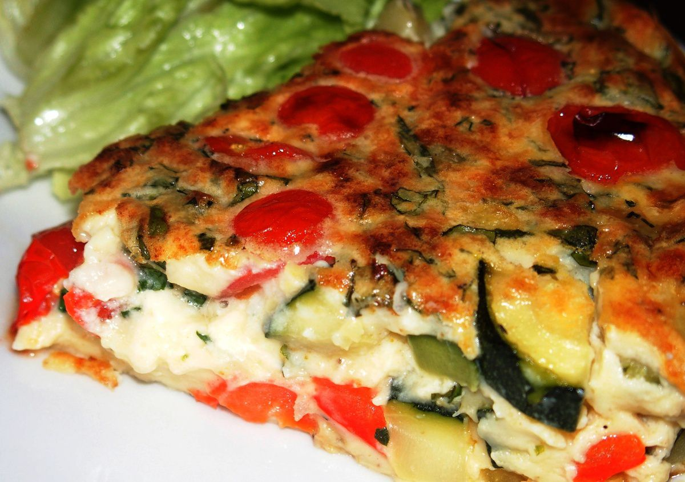

Quiche aux légumes

Ingrédients
- 5 courgettes
- poivrons
- 5 aubergines
- tomates
- la moitié de l'appareil à quiche
- la moitié de la pâte brisée
Préparation
- Préchauffez le four à 180°C.
- Lavez les légumes.
- Coupez les légumes en tranches fines (inutile de les éplucher). Jeter les extrémités.
- Garnir un plat allant au four avec du papier sulfurisé.
- Etaler les légumes sur le papier sulfurisé.
- Badigeonner avec un pinceau avec de l'huile d'olive que vous aurez placé dans un verre.
- Saler généreusement.
- Placer les légumes au four pendant 15 minutes.
- Pendant ce temps : étaler la pâte brisée et la placer dans un moule garni de papier sulfurisé.
- Sortir les légumes du four et les placer sur la pâte brisée.
- Saupouder d'origan.
- Saupoudrer de fromage râpé.
- Verser l'appareil à quiche sur les légumes.
- Enfourner pour 30 minutes environ.